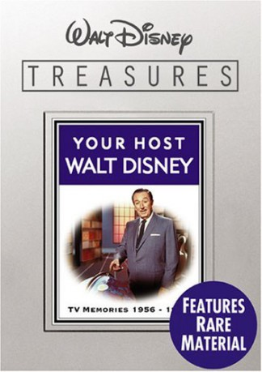
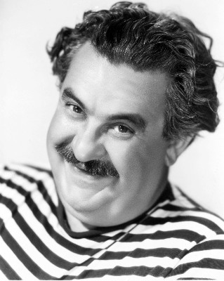
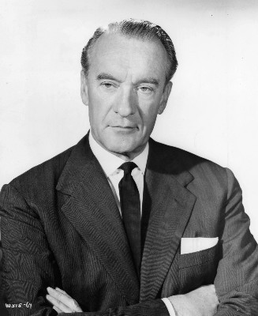

#10297 Disneys Schurkenkabinett
Alternativ: Disney's Greatest Villains (Originaltitel)
 
 IMDB-Wertung: 9.1 / 10
IMDB-Wertung: 9.1 / 10  Metascore: 0
Metascore: 0 
The Slave in the Magic Mirror is the host of this show, designed to explain that all heroes need villains to balance things out. Without villains, there would be no heroes. Villains from Disney films abound here.
Jahr: 1977
Dauer: 41 Minuten
FSK:
Land: USA Studio: NBCTonspuren: DD2.0 - ,
Untertitel:
Auflösung: 1080p (1440x1080) Größe: 1699 MB
Genre: Drama, Abenteuer, Familie, Western, Biographie
Regisseur:
Drehbuch:
Soundtrack:
Darsteller:
- Eleanor Audley als Lady Tremaine / Maleficent (archive footage)
 Kathryn Beaumont als Wendy (archive footage)
Kathryn Beaumont als Wendy (archive footage)- Pinto Colvig als Grumpy / Sleepy / Goofy (archive footage)
 Hans Conried als Slave in the Magic Mirror / Captain Hook (archive footage)
Hans Conried als Slave in the Magic Mirror / Captain Hook (archive footage)- Walt Disney als Mickey Mouse (archive footage)
- Bobby Driscoll als Peter Pan (archive footage)
 Eva Gabor als Miss Bianca (archive footage)
Eva Gabor als Miss Bianca (archive footage)- Betty Lou Gerson als Cruella De Vil (archive footage)
-  Billy Gilbert als Sneezy / Willie the Giant (archive footage)
- Otis Harlan als Happy (archive footage)
 Sterling Holloway als Kaa (archive footage)
Sterling Holloway als Kaa (archive footage)- Jim Jordan als Orville (archive footage)
- Lucille La Verne als Queen / Witch (archive footage)
 Bob Newhart als Bernard (archive footage)
Bob Newhart als Bernard (archive footage) Jeanette Nolan als Ellie Mae (archive footage)
Jeanette Nolan als Ellie Mae (archive footage) Geraldine Page als Madame Medusa (archive footage)
Geraldine Page als Madame Medusa (archive footage)- Bruce Reitherman als Mowgli (archive footage)
-  George Sanders als Shere Khan (archive footage)
 Hal Smith als Kaa
Hal Smith als Kaa- Michelle Stacy als Penny (archive footage)
 Karl Swenson als Merlin (archive footage)
Karl Swenson als Merlin (archive footage) Martha Wentworth als Madam Mim (archive footage)
Martha Wentworth als Madam Mim (archive footage)- Ilene Woods als Cinderella (archive footage)
- Roy Atwell als Doc (archive footage)
- Adriana Caselotti als Snow White (archive footage)
- Anita Gordon als Singing Harp (archive footage)
- James MacDonald als Evinrude (archive footage)
- Junius Matthews als Archimedes (archive footage)
- Scotty Mattraw als Bashful (archive footage)
 Clarence Nash als Donald Duck (archive footage)
Clarence Nash als Donald Duck (archive footage)- Rickie Sorensen als Wart (archive footage)
- Bill Thompson als Mr. Smee (archive footage)
Datei: X:\Kinder Disney HD\Classic Cartoon\Disneys Schurkenkabinett (1977, FSK, 1440x1080).mkv seit 29.12.2018
Festplatte: Kinder-Filme+Trick
 Es gibt insgesamt 22 Filme in der Gruppe 'Kinder Disney HD\Classic Cartoon'
Es gibt insgesamt 22 Filme in der Gruppe 'Kinder Disney HD\Classic Cartoon'